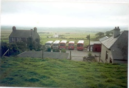
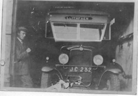
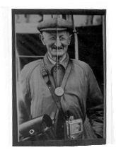
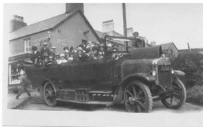
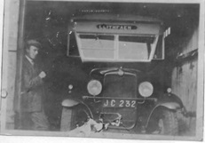
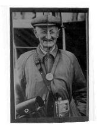
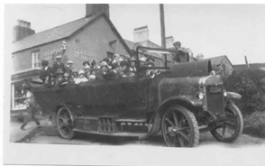

Red Garage
Israel Mathew James Williams bought the first bus (a Ford) in 1920, from Porthmadog. Later, the business transferred to Mathew Williams, his nephew (Gwyn Williams, Delfryn’s father - the last owner). He carried goods back and forth to Cae’r Nant during the week. The buses ran a daily route to Pwllheli. Griffith Richard Williams (affectionately known as taid bysus (grandpa buses)) was a bus conductor on them for years. Red Garage also sold paraffin, petrol and fixed cars.
A picture of Red Garage
 One of the buses - Bws Torth
Matt Williams admiring the Chevrolet
Griffith Richard Williams (affectionately known as taid bysus (grandpa buses))
A Charabanc in front of Liverpool House
One of the buses - Bws Torth
Matt Williams admiring the Chevrolet
Griffith Richard Williams (affectionately known as taid bysus (grandpa buses))
A Charabanc in front of Liverpool House